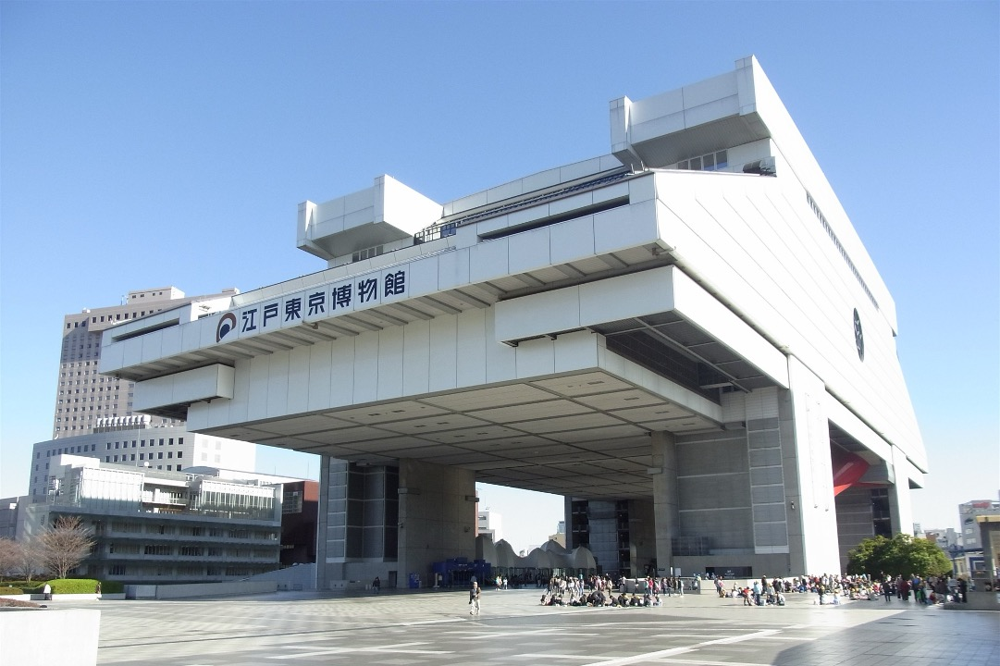

Cool Stars 23
15 – 19 June 2026, TOC Ariake, Tokyo Bay Area, Japan
The "Cambridge Workshops on Cool Stars, Stellar Systems and the Sun" are held biennially and have evolved to be the premier conference series for cool star research.
Sunday Event and Welcome Reception
Join us for a special reception beneath a glowing Earth! The reception will take place under the iconic Geo-Cosmos at Miraikan, one of Japan's leading science museums dedicated to exploring the frontiers of science and the future of our planet. Made of 10,362 LED panels displaying real-time scientific data and satellite imagery of the Earth, Geo-Cosmos provides a striking setting for conversation and networking among participants.
Before the reception, we will hold a talk event at Miraikan Hall entitled "Long-Term Solar/Stellar Activity and Its Extremes through Various Proxies." In this session, two specialists will discuss how astronomers use various proxies to advance our understanding of solar and stellar activity, as well as Sun-Earth and star-planet connections.
- Date & Time: June 14 (Sun)
14:00–18:30 Registration
15:00–18:00 Talk event
18:30–20:30 Reception - Location: Miraikan
- Speakers of Talk Event:
Dr. Hisashi Hayakawa (Nagoya University)
Specialist in the reconstruction of extreme solar storms and long-term solar variability using historical records. He will present several examples of how past solar activity can be quantified using historical records.
Dr. Alexander Shapiro (University of Graz)
Specialist in stellar and solar activity and variability. He will compare the Sun with other stars using multiple activity proxies and discuss how typical the Sun is as an active star. He will also discuss which combination of factors contributed to making the Sun a hospitable host star for a habitable Earth.


A Young Astronomers’ Mentoring Lunch
On Tuesday, June 16, there will be a first-time-ever special lunch at Cool Stars 23.
This is modeled on the popular Young Astronomers (YA) lunches at IAU General Assemblies, and provides an opportunity for early-career attendees to meet more senior mentors in small groups.
You are invited to join the lunch, either as a YA or as a mentor, by going to: https://forms.gle/HDvScBzWsNpgR4Nw9
We anticipate being able to handle about 100 people total, so a random drawing will be held for the YAs, and the SOC will help select the mentors so that they represent a broad cross-section of attendees.
When you sign up at the above link, you will be asked if you have questions or topics you would like to see brought up.
A bento box lunch will be available for a nominal cost of about 1,000 JPY.
The registration deadline for the YA lunch is June 5 (Fri).
For the SOC:
David Soderblom and Andrea Dupree, YA lunch organizers
Takeru Suzuki, CS 23 SOC Chair
Excursions
- Excursions will be arranged by the Tokyo Convention & Visitors Bureau (TCVB).
-
Participants will be able to choose from six different guided bus tour courses to sightseeing destinations within Tokyo.
View the Tour List (PDF) - Participation is free of charge.
- Sign-up for the excursions will be handled in person at the TCVB desk during the conference.
- Please note that the number of participants is limited. Excursions are available only to participants affiliated with institutions outside Japan, as part of the support provided by the TCVB.
-
We apologize that not everyone may be able to join.
There are many places to visit in and around Tokyo, so exploring on your own is also a nice option. You may find the logistics page helpful. - Date & Time: June 17 (Wed) 13:30 - 17:00
(13:20 - 17:00 for Tour 1)

©TCVB

©TCVB

©TCVB
Special Lecture
"Discovery History of Superflares"
Prof. Kazunari SHIBATA (Doshisha University and Kyoto University)
In 2012, Hiroyuki Maehara et al. published a paper entitled “Superflares on Solar-Type Stars” in Nature, based on a detailed analysis of a large amount of Kepler data, in collaboration with four undergraduate students: Takuya Shibayama, Yuta Notsu, Shota Notsu, and Takashi Nagao. Here, superflares are defined as flares with energies more than 10 times greater than those of the largest solar flares observed during the past 30 years (i.e., superflare energies exceed 10^33 erg). Since then, research on superflares has become very active worldwide, not only in relation to space weather in the present Sun–Earth system (i.e., the possibility of future solar superflares), but also in the context of the habitability of exoplanets (i.e., exoplanetary space weather). In this special lecture, I will review the history of how superflare research began in 2010, which was the actual first year of our search for superflares on solar-type stars observed by Kepler, and discuss prospects for further development of superflare studies worldwide.
- Date & Time: June 16 (Tue) 18:00-18:30
- Location: TOC Ariake (conference venue)
Banquet
The CS23 Banquet will be held on Thursday, June 18, in the same building, TOC Ariake. All CS23 participants and their accompanying guests are warmly invited. The banquet venue is located on the 20th floor of TOC Ariake, offering a beautiful nighttime view of the Tokyo Bay area (if the weather permits!). Guests will enjoy a selection of fine local cuisine, along with a wide variety of alcoholic and non-alcoholic beverages, including Japanese sake. Following the poster session, participants will proceed to the banquet floor by elevator.
- Date & Time: June 18 (Thu) 18:45-
- Location: TOC Ariake (conference venue), the 20th floor
- Fee: 10,000 JPY (for ages 12 and older)
- Registration: Please edit your Application Details in the registration portal


Banquet and nighttime view images generated by ChatGPT 5.2. The actual setup may differ from this image.